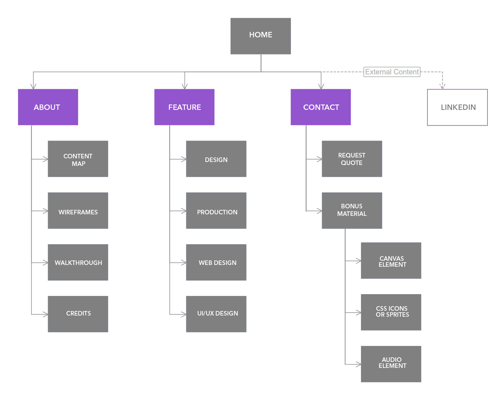
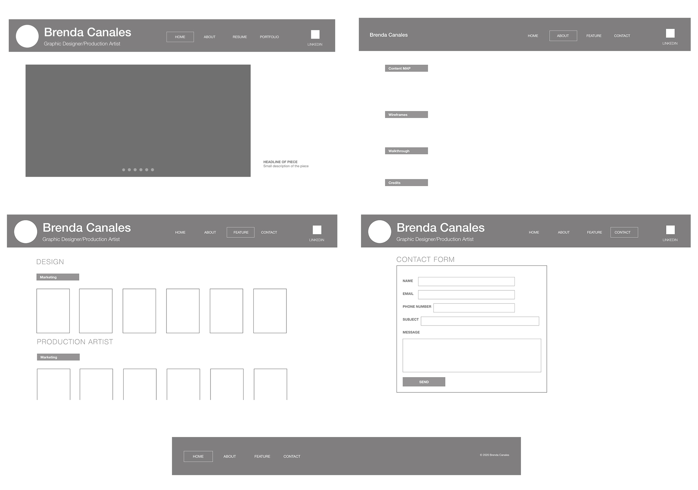

Content Map

Wireframes

Walkthrough
Required items for this project:
- Content map: I generated it with the Mind Map tool (see below)
- Wireframe: I generated this using the online tool www.wireframe.cc (see below)
- HTML 5: the structure uses HTML 5 tags such as nav, section and footer
- CSS for layout: the site uses basic CSS for all layouts
- Top four sections are: Home, About, Samples and Contact
- I created the favicon for the site using Photoshop
- Glyphs: see sample #4
- Video element: see sample #2
- Audio element: see sample #6
- Slideshow: see homepage (used yii2sly)
- Use a web font: every h1 tag uses a web font from Google (also see example #1)
- HTML 5 canvas element: see example #3 (drew a traffic cone)
- HTML 5 form validation: see example #7
- JSON implementation: see example #5 (schools I've attended overlaid on a Google Map)
- Server-side persistent storage: all the samples are stored in a SQLite database
- Data visualization: used Google services to show three gauges (see example #9)
- Asynchronous updates: see example #10
- Client-side scripting: used highlight.js to format all code examples; also see example #8
- Server-side scripting: this entire application is built with the PHP-driven Yii2 framework
- Credits section: see below
- Walkthrough: this is it!
Credits
- Footer:
- Slidewhow:
- Footer:
- Feature:
- Contact Page:
- CSS Sprite:
- Canvas Element
- Video element:
- Audio element:
- Use a web font: main header, my name uses a web font from Google
- HTML 5 form validation:
- JSON implementation: see example #5 (schools I've attended overlaid on a Google Map)
- Server-side persistent storage: all the samples are stored in a SQLite database